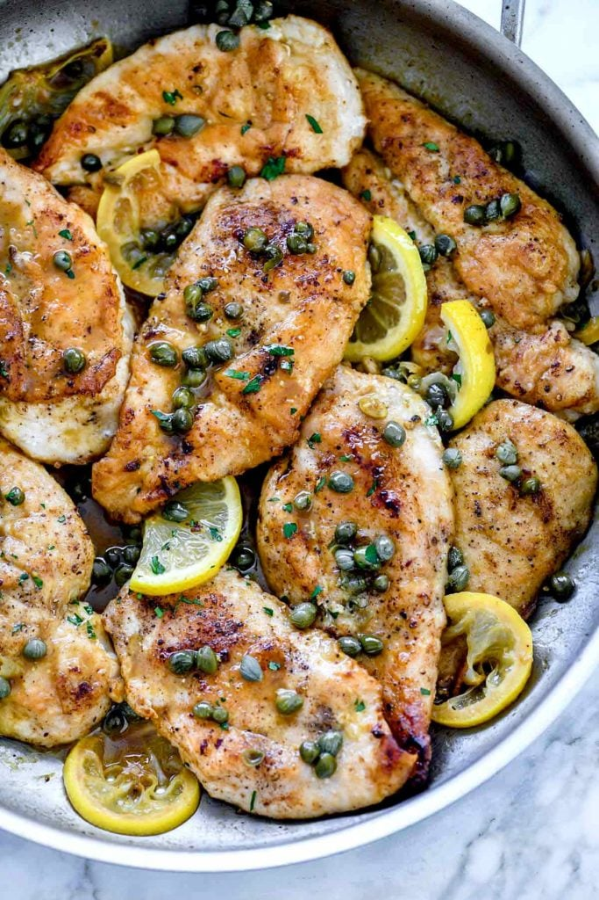

Chicken Piccata Recipe

This is a recipe for Chicken Piccata.
Ingredients:
- 1 lemon
- 1.5 pounds of boneless, skinless chicken breasts
- 1 teaspoon kosher salt
- 1 teaspoon ground black pepper
- 1/3 cup flour
- 3 tablespoons butter (divided)
- 2 tablespoons canloa oil
- 1 cup chicken broth, white wine, or a combination of both
- 2 tablespoons capers, drained and rinsed
Steps:
- Slice the lemon in half, juice one half, then cut the other half into 1/8 inch slices and set aside.
- Trim any excess fat from the chicken breasts and slice in half lengthwise to make two thin cutlets. Season both sides of the chicken breasts evenly with the kosher salt and freshly ground black pepper then dredge each breast in the flour, shaking off any excess.
- Heat 2 tablespoons butter with the canola oil in a large skillet over medium-high heat. Add 4 pieces of the chicken and cook for 2-3 minutes per side. Transfer to a platter or sheet pan and cover with foil. Continue with the remaining chicken.
- Reduce the heat to medium and add the chicken broth or wine (or 1/2 cup of both) the lemon juice, sliced lemons, and the capers, scraping up the browned bits on the pan and cook for 2-3 minutes.
- Stir in the remaining 1 tablespoon of butter until melted. Taste for seasoning and spoon the sauce over the chicken breasts.
Notes: Keep the cooked chicken breasts warm while the sauce cooks by plating on a platter and covering with aluminum foil, or place in a 200°F oven.